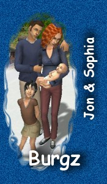
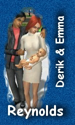
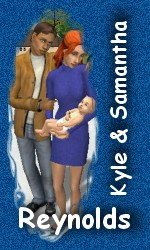
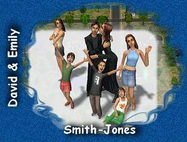
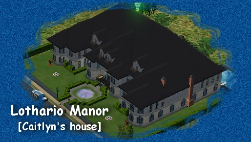
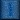

|
 |
The Burgz
Jon & Emily are the proud parents of the twins,
Emma and Samantha.
They also have a son, Samuel; who is in college.
They have 2 at home...a daughter they adopted, Sarah
and wee babe Sander.
And Emily is expecting child #6!
Jon's occupation is "Mad Scientist",
his lifelong aspiration is to "have 6 grandchildren".
Emily is "Chief of Staff".
Her lifelong aspiration is to become "Capt. Hero".
|
The Reynolds (1)
Derik and Emma have 1 baby, little girl, Emily.
Derik is an Executive,
his lifelong aspiration is to become "Chief of Staff".
Derik is the son of Richard, twin brother to Kyle.
Emma is the daughter of Jon & Emily Burgz,
twin sister to Samantha.
Emma's lifelong aspiration is to have 6 grandchildren.
|
 |
 |
The Reynolds (2)
Kyle and Samantha have one baby boy, Ryan.
Kyle is a MVP (Most Valuable Player).
Kyle's lifelong aspiration is to become a "Celebrity Chef".
Samantha is a Sous Chef.
Samantha's lifelong aspiration is to have 6 grandchildren.
|
The Smith-Jones
One of moms huge families!
David & Emily have 8 children so far!
(Emily has a "want" for 10 children!)
They have Cassandra (the oldest, married to Jacob Pierce),
grandparents to Keith.
Their oldest son, Aaron just started college.
And the second oldest daughter, Tiffany...also in college.
Still at home are the teens, Jessie and Rhea Marie
The twins, Jeremy and Justine.
And just turned child, Amber.
David was Capt. Hero,
then he fulfilled is lifelong aspiration of being "Chief of Staff",
his NEW aspiration is to be a "Criminal Mastermind"...which he
just fulfilled.
Emily's lifelong aspiration was to be Capt. Hero..
which she accomplished.
Her NEW aspiration is to "celebrate a Golden Anniversary".
That MIGHT not happen if mom doesn't leave
the "Elixir of Life" alone! =P
|
 |

Lothario Manor
Mom "built" this house for one of Caitlyn's characters...The Lotharios
We have many families throughout the neighborhoods,
and at the Universities.
Mom and I also "created" a neighborhood....
"MoSha Valley", with shopping center, park and University! :)
Click on a button below to navigate:

Background, buttons created by My Mom
Sims characters created in the Sims 2 game by myself and mom.
Sims, Sims2 logo registered to EA Games and Sims.
|
|